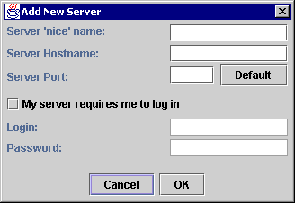

The Add / Edit Server Properties Dialogue |
There are two ways of displaying the Add / Edit Server Properties Dialogue:

The name this server should be referred to in all dialogues with the user and in the folders & servers tree panel. Can be of any length and contain any number of spaces and unusual characters.
The Internet hostname of your News Server.
If this dialog is being used to edit the properties of an existing server, the host name cannot be changed. You have to create a new server with the host name if the host name of your news server should change for some reason.
The Server Port is the IP port number your server is listening on. This is normally 119 for NNTP News Servers. The Default button sets the Server Port box to 119.
Some News Servers require a username and password before they will let you read or post to all or particular News groups. If this is the case, your site administrator will have given you a password and username fo the News Server, and you should make sure this option is checked, and fill in your login name and password.
If your News Server requires you to log in, you should enter your login name and password in these boxes. The password will not be echoed to the screen.
You should note that the password mechanism in NNTP is insecure and passwords are transmitted in plain text.
Saves or aborts your changes.
If you have added a new News Server, when you click on Ok, NewsAgent will attempt to establish a connection with the News Server you have specified before continuing. If your Internet connection is slow, or the server doesn't exist or isn't available, there will be a delay. Eventually, an error dialogue will appear informing you of the problem, and you will be given the option of editing the details again or clicking on Cancel.
Next Page: Message Composer Dialogue